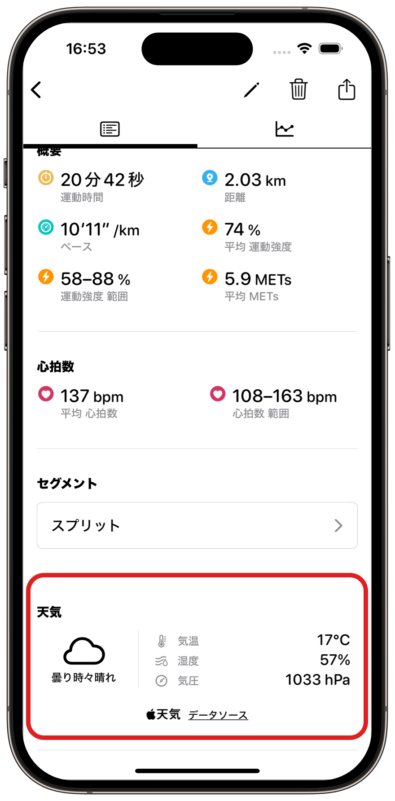

ヘルプ
天気

測定したワークアウトに、天気情報を追加することができます。
利用するためには、PROの購入と利用開始設定が必要です。
天気の取得にあたり、ワークアウト開始時の位置情報が天気サービスに送信されます。
ご理解の上、ご利用ください。
天気サービス
Apple Weather
プロバイダ: Apple Inc.
データソース
WeatherKit
Apple Weatherはユーザのデータを侵害することなく、地域に特化した予報を提供できる仕組みになっています。
ZonesはApple Weather以外のサービスは使用していません。
必要な環境
- Zones v 6.1 以上
- PRO (アプリ内課金)
- watchOS 9 以上
- 位置情報、ネットワークの利用
設定
利用開始する
- Apple WatchでZonesアプリを起動します。
- 「設定」をタップします。
- 「天気の設定」をタップします。
- 「天気を利用する」 をタップします。
天気を記録するワークアウトの種類を設定する
- Apple WatchでZonesアプリを起動します。
- 「設定」をタップします。
- 「天気」 をタップします。
- なし
- 天気は利用しない。
- 経路を記録するワークアウト
- 経路マップを記録するワークアウトを測定する場合のみ、天気を登録します。
- 全てのワークアウト
- すべてのワークアウトで天気を登録します。
天気情報の表示
ワークアウトに記録された天気は、iPhoneアプリのワークアウト詳細画面にて確認ができます。
気温と気圧の単位はiPhoneの地域設定に依存します。
Zones以外で測定されたワークアウト
すべての情報が表示できるわけではないことにご注意ください。
天気のデータソースについては、ワークアウトを登録したアプリにてご確認ください。
トラブルシューティング
ご利用の状況により、天気が利用できない場合があります。
必ず天気が登録されることを保証するものではないことをご了承ください。
登録できない原因の例
- 位置情報が取得できなかった
- ネットワークが利用できなかった
- 天気のサービスが利用できなかった